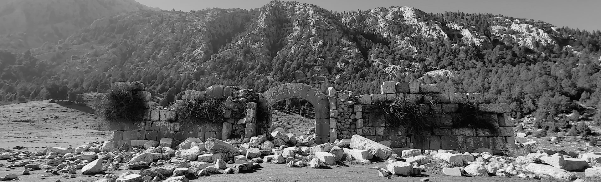
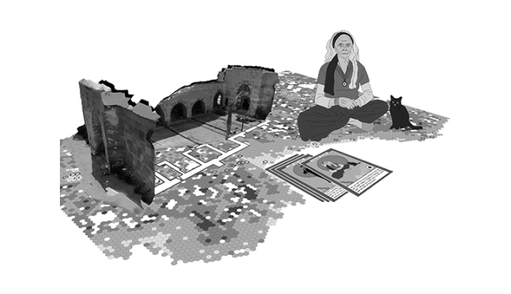
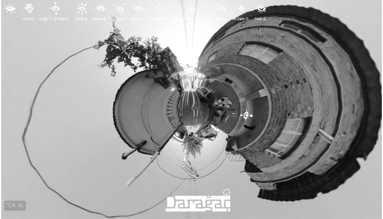

Projects

A board game engaging players in uncovering ancient Anatolian trade routes, through strategic decision-making on hexagon-tiled topography, using cards to determine movement and scoring.

Virtual museum of underwater cultural heritage incorporating the practices of collection, preservation, research, visualization and exhibit.

A 360 virtual tour of a street exhibition of the art collective Daragac in Izmir, Turkey